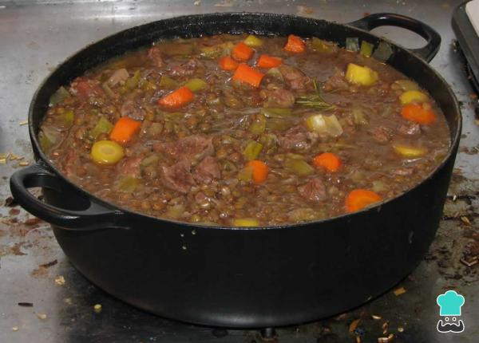

Un guiso es un plato cocido lentamente que combina carne, verduras y a menudo legumbres, todo en una sola olla. Los ingredientes se cocinan juntos durante un largo período, permitiendo que los sabores se mezclen y se intensifiquen. El guiso puede ser de carne, pollo, pescado o vegetariano, y se puede adaptar a lo que tengas a mano. Es ideal para comidas familiares y se puede preparar en grandes cantidades, lo que lo convierte en una opción conveniente y deliciosa para muchas personas.

Corta la carne en trozos del tamaño de un bocado.
Pica finamente la cebolla y el ajo.
Corta las zanahorias, papas y otros vegetales en trozos similares.
Calienta una cucharada de aceite en una olla grande a fuego medio-alto.
Añade los trozos de carne y dórala por todos lados. Esto ayudará a desarrollar un sabor más profundo
en el guiso.
Retira la carne y resérvala. En la misma olla, añade un poco más de aceite si es necesario.
Sofríe la cebolla y el ajo hasta que estén tiernos y fragantes.
Vuelve a añadir la carne a la olla.
Agrega los vegetales, las legumbres si las usas, y los condimentos al gusto.
Vierte suficiente caldo (y un poco de vino si lo deseas) para cubrir los ingredientes.
Lleva el guiso a ebullición.
Reduce el fuego a bajo, tapa la olla y cocina a fuego lento durante 1-2 horas, o hasta que la carne
y los vegetales estén tiernos.
Remueve ocasionalmente y ajusta el líquido según sea necesario.
Prueba el guiso y ajusta la sazón con sal y pimienta si es necesario.
Sirve caliente, idealmente acompañado de pan crujiente o arroz.